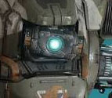
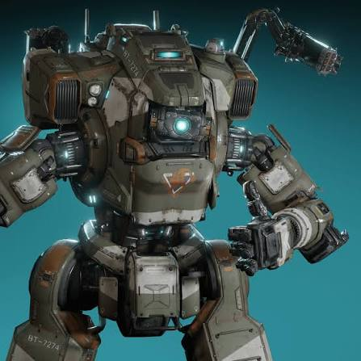
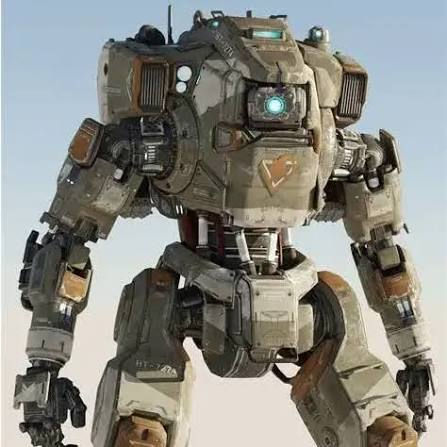
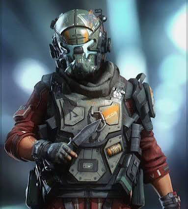

BT-7274 is a Vanguard-class Titan commissioned by the Frontier Militia . He is linked to Jake Copper, a former rifleman turned pilot. The events that made BT a legend are simple: he stopped the Interstellar Manufacturing Corporation from activating the fold weapon and destroying the militia's homeworld, Harmony. What makes BT an interesting creator is his relationship with his pilot, Jack Copper. BT's robotic nature makes for a lot of comedic dialogue between the two, and a real friendship develops. The bond between BT and Jack pays off in the end when BT sacrifices himself to save Jack.

Initially cold and robotic, but as the story progresses, BT adopts more human-like traits. Human expressions remain a challenge for him, but his misunderstanding of them leads to a lot of fun dialogue. BT is constantly brave diving headfirst into danger and even when he is injured this doesn't stop him from sacrifice himself for the greater good.

Jake Copper: A Rifleman turned pilot and the man who saved the militia from the IMC. He was born on Harmony. After the Dunnam Vale massacre, he joined the militia as a rifleman, but after the first battle of Typhon, the militia was defeated, and Jake was one of the few who remained; to survive, he had to link with a titan, BT-7274.
